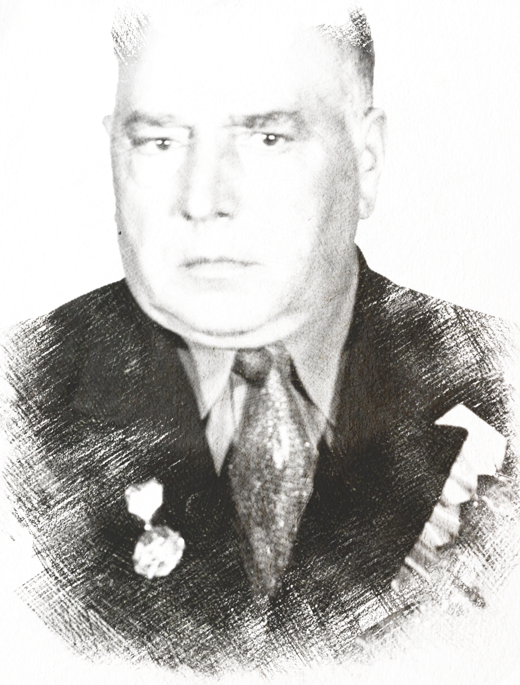

Батырь Сергей Григорьевич
1914-1978
Гришко Александр Иосифович
1923-1996
Светлейший Захар Петрович
21.11.1926 - 18.03.2017

Мастников Иван Никифорович
1911-1978

Холодов Борис Ефимович
1908-1985
Запащиков Николай Григорьевич
24.1.1916 - 15.11.2008

Лысенко Иван Никифорович
1924-1998
Косицин Алексей Петрович
1920-1999
Кропачев Николай Дмитриевич
1922 - 1958
